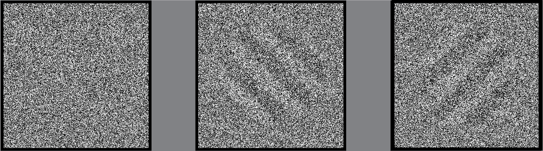

<!DOCTYPE html>
<html>
    <head>
        <title>My experiment</title>
        <script src="jspsych/dist/jspsych.js"></script>
        <script src="jspsych/dist/plugin-html-keyboard-response.js"></script>
        <script src="jspsych/dist/plugin-image-keyboard-response.js"></script>
        <script src="jspsych/dist/plugin-html-button-response.js"></script>
        <script src="jspsych/dist/plugin-call-function.js"></script>
        <script src="jspsych/dist/plugin-animation.js"></script>
        <script src="jspsych/dist/plugin-preload.js"></script>
        <script src="jspsych/dist/plugin-external-html.js"></script>
        <script src="jspsych/dist/plugin-survey-html-form.js"></script>


        <link href="jspsych/dist/jspsych.css" rel="stylesheet" type="text/css" />
    </head>
    <body></body>

    
    <script>
  
        /* VARIABLES */
  
        const num_steps = 20;
        const stim_dur  = 2000; /* milliseconds */
        const fix_dur = 200;

        const num_ima_trials = 9; /*10th is the critical one */
        const num_ima_reps = 1; /* how often to repeat the 2 orientations */


        /* GLOBAL VARIABLES */
        window.vis_level = 38;
        window.stim_id  = 0; /* left */
        window.trl_num = 0;
        window.block_num = 0;

        /*ESSENTIALS*/

        /* fixation */
        var fixation = {
          type: jsPsychHtmlKeyboardResponse,
          stimulus: '<div style="font-size:60px;">+</div>',
          choices: "NO_KEYS",
          trial_duration: fix_dur,
          data: {task: 'fixation'}
        };

         /* update trial number */
        var update_trial_number = {
            type: jsPsychCallFunction,
            func: function() { 
                window.trl_num++;
            }
        };
  
        /* TIMELINE */
  
        var timeline = [];

        /* WELCOME MESSAGE*/
        
        var welcome = {
            type: jsPsychHtmlKeyboardResponse,
            stimulus: "Welcome to the experiment. Press any key to begin."
        };

        timeline.push(welcome)

        var preload = {
            type: jsPsychPreload,
            stimulus: ["img/stim_1_vis_50.png", "img/stim_2_vis_50.png"]
        };    
        timeline.push(preload);

        /* INSTRUCTIONS */
        
        var instructions = {
        type: jsPsychHtmlKeyboardResponse,
        stimulus: `
            <p> During the next part of this experiment you will imagine <strong> gratings </strong> while looking at <strong>noise</strong> (see below) </p>
            <p> <strong>Gratings</strong> are images of alternating black and white lines (left) </p>
            <p> <strong>Noise</strong> is a collection of random black and white pixels (middle) </p>
            <p> Please imagine the grating as vividly as possible, as if it was actually presented on the screen (right). </p>
            <p> After every trial you will be asked to report how vivid your imagery was </p>
            </img>
            </div>
            <p>Press [space] to continue </p>
        `,
            choices: [' '],
        };
        timeline.push(instructions);

        
        /* IMAGERY INSTRUCTIONS */

        var instr_imagery = {
            type: jsPsychHtmlKeyboardResponse,
            stimulus: function() {
                if (window.stim_id == 0) {
                    var stim_instr = "a left tilted grating";
                    var stim_pic = 'img/stim_1_vis_50.png';
                } else if (window.stim_id == 1) {
                    var stim_instr = "a right tilted grating";
                    var stim_pic = 'img/stim_2_vis_50.png';
                }
                return `
                <p> During the next few trials, please imagine `  + stim_instr + `</p> 
                <p> Imagine the grating as vividly as possible, as if it was actually presented on the screen (see below) </p>
                <p> Please keep your eyes open and look at the noise while imagining </p>
                <p> After each trial, you will be asked to rate the vividness of your imagery </p> 
                <p> on a scale from 1 (not vivid at all) to 5 (perfectly clear and as vivid as real seeing) </p>
                </img>
                </div>
                <p>Press [space] to continue </p>
                ` 
            },
            choices: [' '],
            post_trial_gap: 500, 
        }
        timeline.push(instr_imagery);


        /* IMAGERY PROCEDURE */
        /* FIGURE OUT DYNAMIC STIMULUS THING */
        function makeStimSequence(startValue, stopValue,cardinality,stim) {
            var arr = [];
            if (stim > 0 ){
                var step = (stopValue - startValue) / (cardinality - 1);
                for (var i = 0; i < cardinality; i++) {
                    var vis = Math.round(startValue + (step * i));
                    arr.push("img/stim_" + stim.toString() + "_vis_" + vis.toString() + ".png");
                }
            } else if (stim == 0){
                ranNoiseOrder = jsPsych.randomization.repeat([1,2,3,4,5,6,7,8,9,10,11,12,13,14,15,16,17,18,19,20],1);
                for (var i = 0; i < cardinality; i++) {
                var random_number = ranNoiseOrder[i];
                arr.push("img/noise_" + random_number.toString() + ".png");
                }
            }
            return arr;
        };

        var show_dynamic_noise = {
            type: jsPsychAnimation,
            stimuli: function() {
            arr = makeStimSequence(1,window.vis_level,num_steps,0);
            jsPsych.pluginAPI.preloadImages(arr)
            return arr
            },
            choices: ["NO_KEYS"],
            frame_isi: 0,
            frame_time: Math.round(stim_dur/num_steps)
        };

        var ima_response = {
            type: jsPsychHtmlKeyboardResponse,
            choices: ['1','2','3','4','5'],
            stimulus: 'How vivid was your mental image?',
            prompt: '<p> Not vivid at all [1] - As vivid as real seeing [5]',
            data: {test_part: 'ima_practice'}
        };

        var ima_procedure = {
            timeline: [fixation, show_dynamic_noise, ima_response],
            repetitions: num_ima_trials
        };
        timeline.push(ima_procedure);


        /* CRITICAL TRIAL */
        var show_dynamic_stimulus= {
            type: jsPsychAnimation,
            stimuli: function() {
                arr = makeStimSequence(1,window.vis_level,num_steps,0);
                jsPsych.pluginAPI.preloadImages(arr)
                return arr
            },
            choices: ["NO_KEYS"],
            frame_isi: 0,
            frame_time: Math.round(stim_dur/num_steps)
        };

        var critical_question = {
            type: jsPsychHtmlButtonResponse,
            stimulus: `
            <p> On the last trial, was there a grating presented on the screen? </p>
            <p> No, there was only noise on the screen, any grating I saw was my imagination [No]  </p>
            <p> Yes, there was actually a left-tilted grating on the screen [Left tilted]  </p>
            <p> Yes, there was actually a right-tilted grating on the screen [Right tilted]  </p>
            </img>
            </div> 
            <p> Click on the button corresponding to your answer to continue  </p>
            ` ,
            choices: ['No','Left tilted','Right tilted'],
            data: {
                test_part: 'critical_trial', correct_response: 'Left tilted'
            },
            on_finish: function(data){
                data.correct = data.key_press == jsPsych.pluginAPI.convertKeyCharacterToKeyCode(data.correct_response);
            }
        };

        var confidence_judgement = {
            type: jsPsychHtmlKeyboardResponse,
            stimulus: "How confident are you that you answered the last question correctly? <br>",
            prompt:
            "<br> Not confident at all [1] - Very confident, completely sure [5]" ,
            choices: ['1','2','3','4','5'],
            data: {
                test_part: 'confidence'
            }
        }
        timeline.push(fixation, show_dynamic_stimulus, ima_response, critical_question, confidence_judgement);


        /* DEBRIEF */
        var debrief_questions = {
            type: jsPsychSurveyHtmlForm,
            questions: [
                {prompt: "What is your age?", rows: 2, columns: 40},
                {prompt: "The answer to this question will not affect your payment. " +
                "Did you actually imagine the gratings when we asked you to?", rows: 2, columns: 40},
                {prompt: "Do you have any other comments?", rows: 2, columns: 40},
            ]
        };
        timeline.push(debrief_questions);

        
        /* INFORMATION SHEET */

        var information_sheet = {
            type: jsPsychExternalHtml,
            url: "InformationSheet.html",
            cont_btn: "Start",
            execute_script: true
        };

        timeline.push(information_sheet);


        /* CONSENT */

        var check_consent_function = function(elem) {
            if (document.getElementById('consent_checkbox').checked) {
                return true
            }
            else {
                alert("If you wish to participate, must check the box next to the statement 'I agree to participate in this study'");
                return false;
            }
            return false
        };

        var consent_form = {
            type: jsPsychExternalHtml,
            url: "ConsentForm.html",
            cont_btn: "Start",
            check_fn: check_consent_function
        };

        timeline.push(consent_form)


        /* INIT JS PSYCH */
        
        var jsPsych = initJsPsych({
            on_finish: function() {
                jsPsych.data.displayData();
            }
        });

        jsPsych.run(timeline);
  
    </script>
</html>